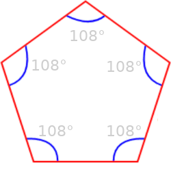

Il Teorema dell'angolo esterno
Teorema 3.3.1. In un triangolo ogni angolo esterno è congruente alla somma dei due angoli interni non adiacenti ad esso.
β = α + γ
Dim. La dimostrazione si ottiene tracciando a partire dal vertice B la parallela al lato AC, in modo da avere due parallele tagliate dalla trasversale AB.
Pertanto si avrà che l'angolo in A è congruente all'angolo AB̂D, in base al teorema delle rette parallele, perchè alterni interni e l'angolo in C è congruente all'angolo DB̂E perchè corrispondenti, quindi l'angolo AB̂E è congruente alla somma dei due angoli interni non adiacenti ad esso. □
Teorema 3.3.2. La somma degli angoli interni di un triangolo qualunque è congruente a un angolo piatto.
Dim. Nella figura sopra, osserviamo che in B, l'angolo esterno α + γ è adiacente all'angolo β quindi α + γ + β ≌ π. □
Corollario 3.3.3. In ogni triangolo rettangolo gli angoli acuti sono complementari.
Corollario 3.3.4. Ogni angolo di un trianolo equilatero è la terza parte di un angolo piatto.
Corollario 3.3.5. Due triangoli sono congruenti se hanno ordinatamente congruenti un lato e due angoli qualsiasi (II criterio di congruenza dei triangoli generalizzato).
La somma degli angoli interni di un poligono convesso
Teorema 3.3.6. In un poligono convesso di n lati, la somma degli angoli interni è congruente a (n − 2) angoli piatti.
Consideriamo un punto P interno al poligono e congiungiamolo con i vertici: otteniamo tanti triangoli quanti sono i lati. Ogni triangolo ha come somma degli angoli interni un angolo piatto. Per ottenere la somma degli angoli interni del solo poligono bisogna togliere l'angolo giro nel punto P, cioè due angoli piatti. □
Corollario 3.3.7 La somma degli angoli esterni di un poligono convesso è congruente a un angolo giro.
Dim. In ogni vertice del poligono la somma dell'angolo interno e dell'angolo esterno vale un angolo piatto, quindi, la somma degli angoli esterni e degli angoli interni dà tanti angoli piatti quanti sono i lati.
somma soli angoli interni + somma angoli esterni = n ⋅ π
Siccome, per il teorema precedente la somma degli angoli interni vale (n − 2) x π, deriva che
somma angoli esterni = n ⋅ π − (n − 2) x π = 2π □
La somma degli angoli esterni non dipende dal numero dei lati del poligono considerato.
In particolare, anche in un triangolo la somma degli angoli esterni è congruente a un angolo giro.
Poichè abbiamo detto che nei pentagoni la somma degli angoli interni è pari a 540°, nei pentagoni regolari ogni angolo misura: 540° : 5 = 108°.
The sum of the exterior angles of any polygon is 360°: Imagine this pentagon as a path. At each vertex there is a change of direction. By walking around the complete polygon so that you finish by facing in the same direction as you started, a whole turn of 360° will be made, that is the exterior angles sum to 360°.
